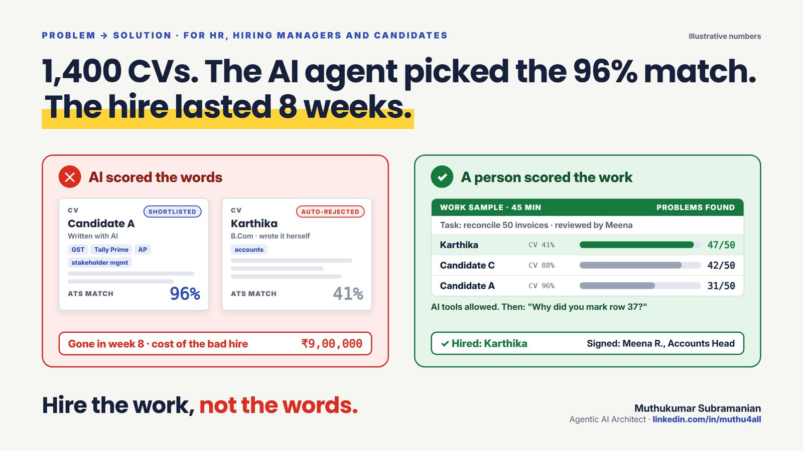
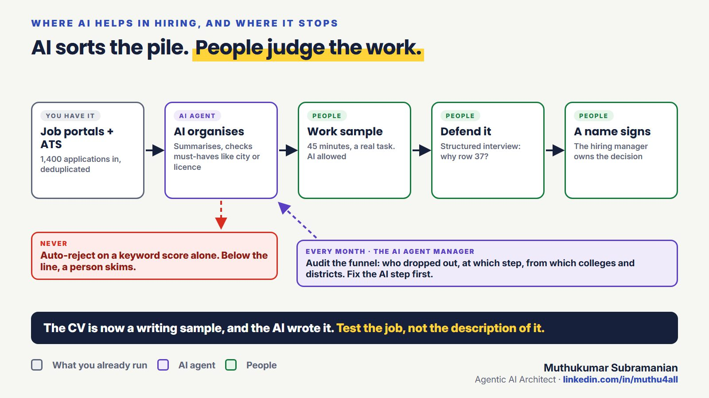
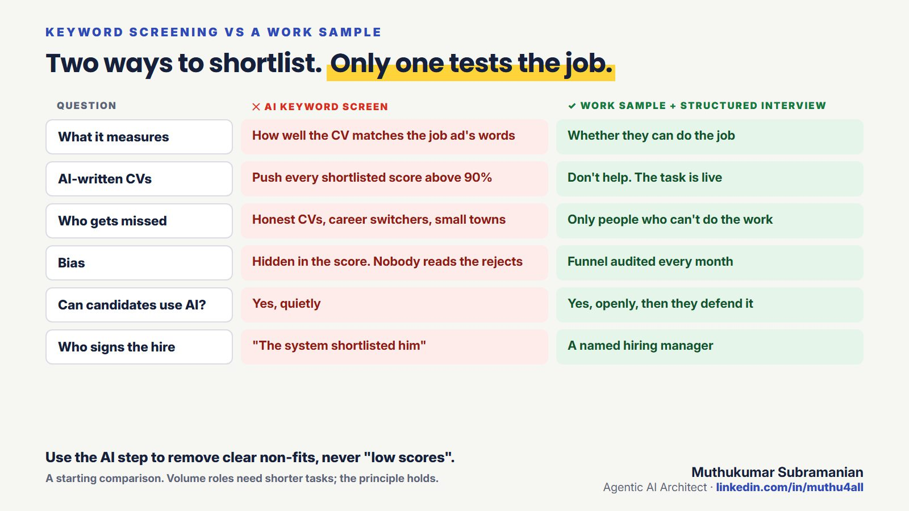

AI Agents Write the CVs. AI Agents Screen Them. Who Answers for the ₹9 Lakh Bad Hire?
By Muthukumar Subramanian · Agentic AI Architect

Monday, 9 AM, an auto-components distributor in Ambattur. One opening for an accounts executive. 1,400 applications in nine days.
Nobody reads 1,400 CVs, so the company's hiring tool does. The applicant tracking system (ATS) pulls them in from the job portals, and its new AI screening agent scores each one against the job description. Anyone under 70% gets a polite automatic rejection.
The top match scores 96%. Every keyword is there: GST reconciliation, Tally Prime, accounts payable, "detail-oriented", "stakeholder management". The interview goes smoothly too. He's hired.
By week eight the month-end close is late, three vendor payments have gone out twice, and he's gone. Two months' salary, the recruiter's fee, the rework and starting again: about ₹9 lakh.
Number 312 on the list scored 41%. Karthika, a B.Com from Pudukkottai with three years at a CA firm, sent a plain one-page CV she wrote herself. She was rejected in the first hour. (The company, the people and every number here are illustrative.)
The AI didn't pick the best accountant. It picked the best-written CV, and an AI wrote that too.
The problem: both sides now optimise for the same words
This isn't a fringe habit. In a Gartner survey of 3,290 job candidates at the end of 2024, about four in ten said they'd used AI during their application, most often to write CV text. On the other side, recruiters keep handing the first screen to AI inside their ATS.
So the job description goes into one AI, which writes a CV to match it. That CV goes into another AI, which scores how well it matches the job description. Both machines read the same words. The shortlist ends up measuring who prompted better, not who can do the work.
Three things go wrong:
→ Good people get filtered out. First-generation graduates, small-town candidates, career switchers, anyone whose CV is honest rather than tuned.
→ "Perfect on paper" stops meaning anything. When every shortlisted CV scores above 90%, the score can't separate them, and the interview ends up rewarding confidence.
→ Bias hides inside the score. A screening model that learns from past hires learns what past hires looked like: the same colleges, the same kind of CV, the same kind of name. Nobody notices, because nobody reads the rejects.
Candidates feel it. In another Gartner survey in 2025, of 2,918 candidates, only 26% trusted AI to evaluate them fairly.
My slightly unpopular view: the CV is now a writing sample, and the AI wrote it. Stop hiring on it.

The solution: hire the work, not the words
This isn't "ban AI from hiring". Move AI to the jobs it's good at, and put real work back at the centre.
→ 1. Let AI organise, never reject alone. It can remove duplicates, summarise experience and check the must-haves, like a location or a licence. A rejection on a keyword score alone isn't allowed. Below the line, a person skims.
→ 2. Give a short work sample to everyone who passes the basics. 45 minutes on a real task: reconcile 50 invoices against a bank statement, reply to an angry customer, fix a broken spreadsheet. Keep it time-boxed, and pay for anything longer than an hour.
→ 3. Allow AI, then ask them to defend it. Candidates can use any AI tool in the task, the way they will on the job. Then they walk you through what they did. "Why did you mark row 37 as a duplicate?" shows judgement in a way no CV can.
→ 4. Same questions, same scoring sheet. Run structured interviews, and score them before the panel compares notes.
→ 5. A named person signs the hire. Not "the system shortlisted him". The accounts head signs, and she can say why.
→ 6. Audit the funnel every month. Who was rejected, at which step, from which colleges and districts. If one group keeps dropping out at the AI step, fix the AI step.
In our story, the 45-minute task changes the order. The 96% candidate finds 31 of the 50 problems. Karthika finds 47. She gets the job.
Hire the work, not the words.

👉 [GIF: B-day18-4-in-article-reorder.gif]
Caption: Eight candidates. The keyword screen picks one order; a person skims below the line, the work sample reorders them, and a named manager signs. All details illustrative.
The rules are catching up
This is more than good practice. Since July 2023, New York City's Local Law 144 has required employers who use automated tools to screen candidates to get an independent bias audit every year, publish a summary and tell candidates. The EU AI Act treats AI that filters job applications or evaluates candidates as high-risk. After this year's Digital Omnibus changes, those obligations apply from December 2027.
India has no hiring-specific AI law yet, but the DPDP Act still covers the personal data in every CV you feed a model. If you hire for global clients, the stricter rules will reach you through their contracts first.
Who owns the screening rules
Somebody has to decide what the screening agent may do, what it must never do, and who reads the monthly funnel. Some companies call that person an AI Agent Manager: someone who looks after an agent's behaviour the way a manager looks after a team. In a 200-person company, it's usually the HR head with one analyst.
Setting it up is work for a forward deployed engineer (FDE): an engineer who works inside the customer's team and ships on their real systems. Here that means a week with the hiring managers, turning "a good accountant" into a 45-minute task and a scoring sheet. The titles are still settling. The work is old-fashioned.
The hard parts
→ Work samples take time. You can't give 1,400 people a task. Use the AI step to remove the clear non-fits (wrong city, missing licence), not the "low scores".
→ Unpaid tasks exploit people. Keep them short, or pay. A candidate's weekend isn't free.
→ Take-home tasks can be outsourced. Do them live, or follow them with the "explain row 37" conversation. If they can explain it, they did it.
→ People have bias too. Removing the AI score doesn't remove the interviewer's bias. Structured questions and a scoring sheet are what help.
→ Volume hiring is different. For 500 delivery partners in a week, the work sample might be a ten-minute ride check. The principle holds: test the job, not the description of the job.
The opportunity
→ For HR heads: pull last quarter's rejects at the AI step and have a person read 50 of them. Count how many you'd have interviewed. That number is your blind spot.
→ For hiring managers: write one 45-minute work sample for your most common role this week.
→ For candidates: keep your CV honest, and build proof: a GitHub repo, a reconciliation you've done, a portfolio. Proof beats keywords.
→ For HR-tech founders and IT services firms: work-sample platforms for Indian roles (Tally, GST, field sales, support in Tamil and Hindi), and bias audits for ATS funnels. Indian firms hiring for US and EU clients will need both.
On 26 Oct I wrote that we're still training freshers for jobs AI already does. Hiring is the other half of that problem: we're still screening them with the old keywords, only faster.
Your turn 👇
For your next hire: CV screening or a 45-minute work sample? Pick one.
Tag the hiring manager who still reads every CV themselves.